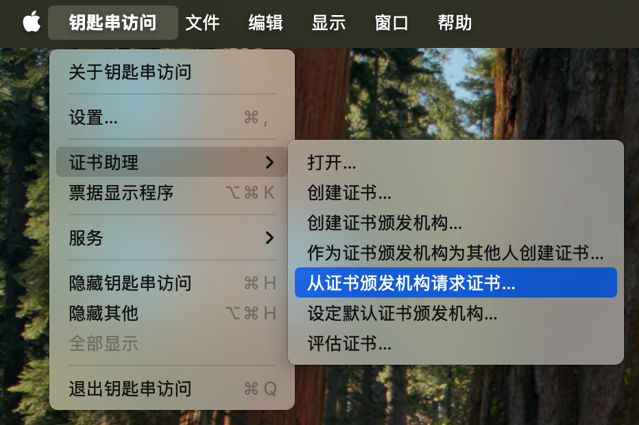
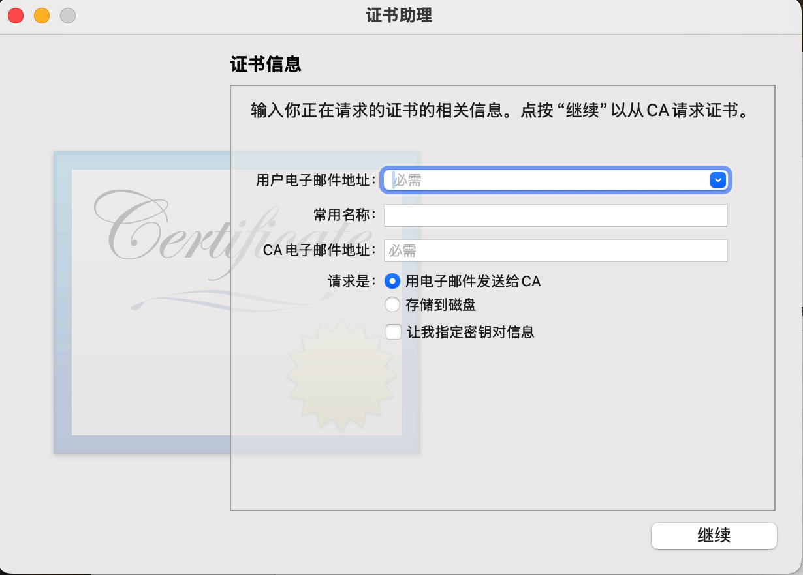
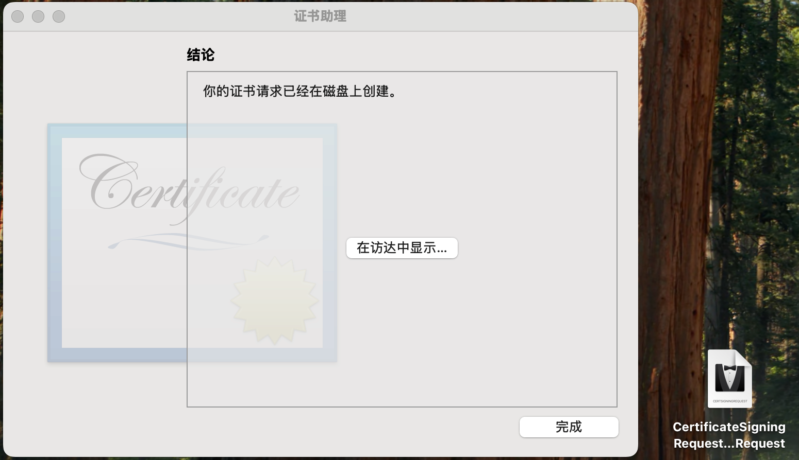
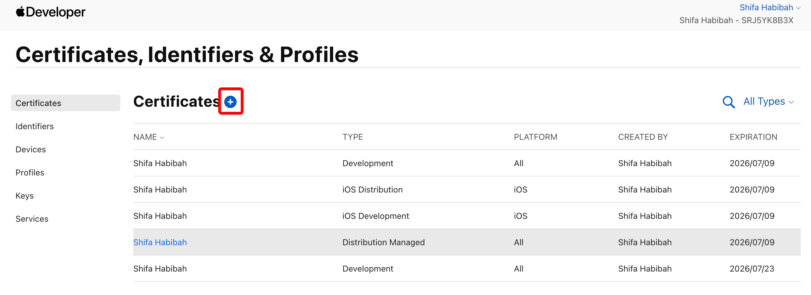
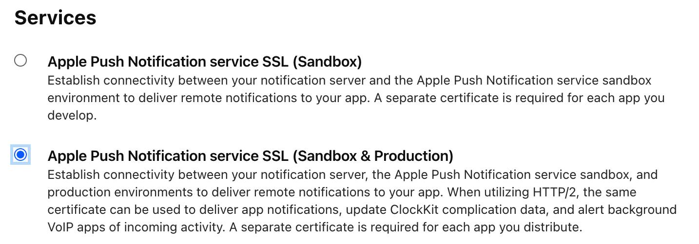
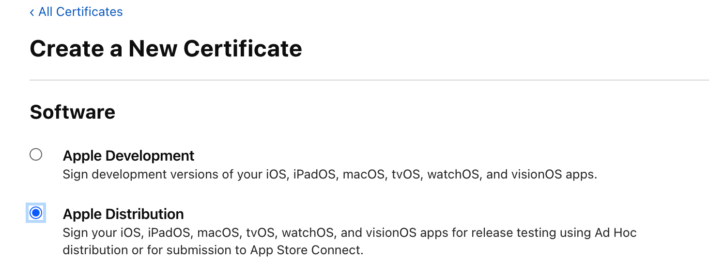
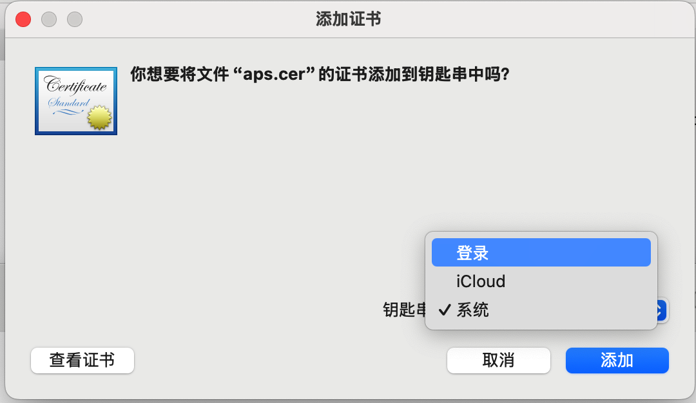

Table of Contents
一、什么是*.p12文件？
.p12文件全称 PKCS#12 (Personal Information Exchange)- 它里面同时打包了：
- 证书 (.cer)
- 私钥 (.key)
- 并且通常会有一个导出密码保护。
二、*.p12文件的用处
⚠️ 注意事项
.p12一定要安全保存，泄露出去别人就能用它伪造推送或签名。- 导出的时候系统会强制你设置一个密码（保护 p12），服务端也需要这个密码才能解密使用。
- iOS 推送通知 (APNs)
- 如果你做推送服务（比如极光、环信、Firebase、EngageLab、OpenInstall），后台都要上传
.p12。 - 作用：服务器拿
.p12去跟 Apple APNs 建立加密连接，从而能推送消息到用户 iPhone。 - App 签名 / 分发
- 在一些第三方平台（比如 CI/CD、MDM 管理平台），上传
.p12+ Provisioning Profile，它们就能自动帮你签名 ipa 包。 - 因为签名需要证书 + 私钥，而
.p12就是打包好的。
- 在一些第三方平台（比如 CI/CD、MDM 管理平台），上传
- 跨平台证书移交
- 如果你换了 Mac，没法直接迁移钥匙串，可以直接导出
.p12，在新 Mac 上导入，就能继续使用同一个证书和私钥。
- 如果你换了 Mac，没法直接迁移钥匙串，可以直接导出
三、生成流程
1、打开：钥匙串访问 (Keychain Access)🔑
后期的MacOS将“钥匙串”归为“密码”
-
之前的老版本MacOS系统自带有独立的
钥匙串访问 (Keychain Access)应用程序入口，亦可以用命令行方式打开open -a "Keychain Access" -
目前最新版的MacOS系统进入
钥匙串访问 (Keychain Access)的方式open /System/Library/CoreServices/Applications/
2、从证书颁发机构请求证书
输入邮箱、常用名称，选择 “存储到磁盘”，得到
.certSigningRequest文件



3、在 Apple Developer 生成 .cer
特殊地区需要打开VPN，苹果官网限制某些地区的IP登录 Apple Developer
-
进入 Certificates → 创建新证书

-
根据需求选择
-
Apple Push Notification service SSL (Sandbox & Production)（推送）

-
Apple Distribution（发布 App）

-
其他用途的证书…
-
-
上传刚才生成的
*.certSigningRequest（系统默认生成：CertificateSigningRequest.certSigningRequest）


-
下载生成的
.cer文件（aps.cer）
4、导入 .cer 并导出私钥
-
双击
.cer文件导入到 钥匙串
-
以上三个选项的区别
- 登录 (Login)： ✅ 最常用，存放和你当前用户绑定的私钥和证书。如果后面要导出
.p12给服务端用（比如推送证书），必须选这个。 - iCloud：会同步到 iCloud 钥匙串，一般不用来存开发/推送证书。
- 系统 (System)：面向整个系统的根证书/受信任 CA，不适合存你的开发/推送证书。
- 登录 (Login)： ✅ 最常用，存放和你当前用户绑定的私钥和证书。如果后面要导出
-
钥匙串里找到该证书（通常在 我的证书 标签下，会和私钥成对出现）


-
右键导出
*.p12（此步骤需要输入MacOS电脑的开机密码）